[1] 2.356192026-11-16
Woman teaching geometry, from a fourteenth-century edition of Euclid’s geometry book.
By the end of this lecture, you should be able to:
TIPS WHEN READING THESE LECTURE NOTES
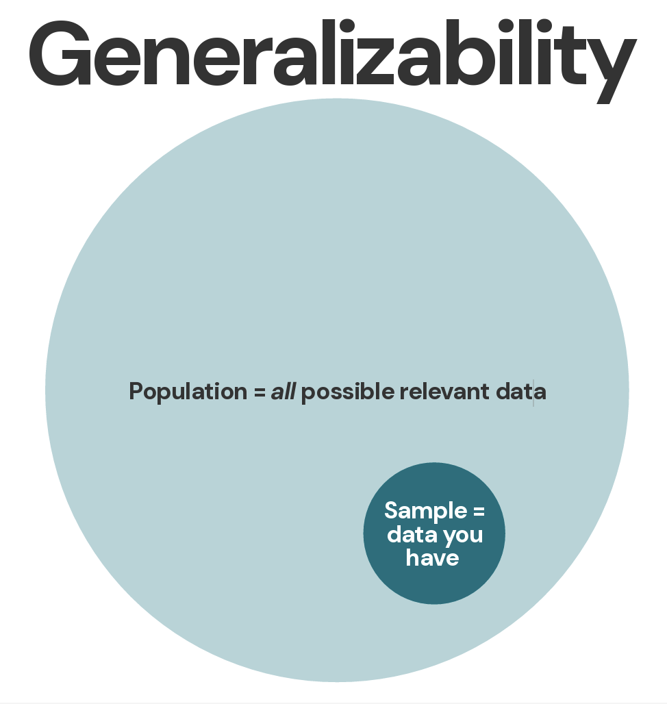
Does this necessarily mean our fitted model will predict well on that new sample?
Not necessarily! Statistical significance and predictive performance are two different questions.
Generalizability
We need to evaluate predictions made by our original fitted model on observations not used to estimate its coefficients.
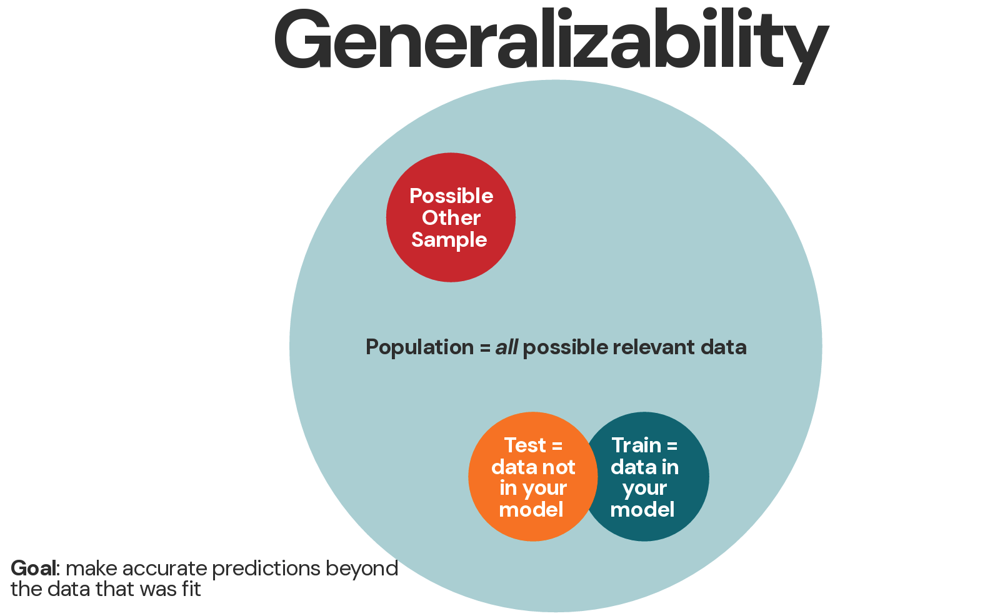
Two types of samples
Typically a learning process utilizes two types of samples.
Models can range from simple (few predictors or a straight-line relationship) to complex (many predictors or flexible nonlinear relationships).
We therefore need to consider how model complexity affects performance on unseen data.
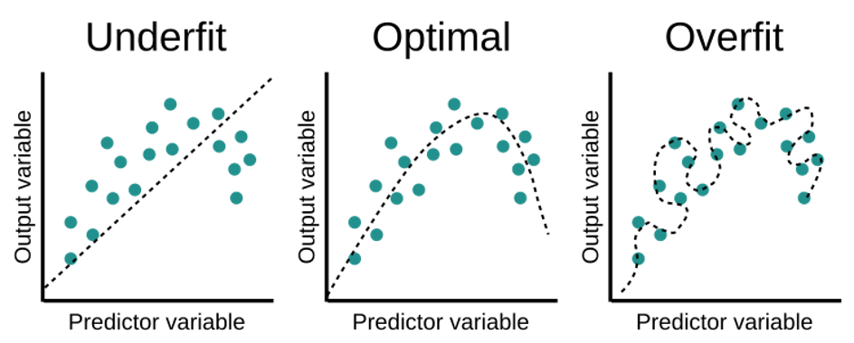
To characterize model fits we typically focus on two types of loss or error. We have looked at specific loss functions before and they vary depending on the problem but here we are talking from a general perspective.
As model complexity increases, training error typically decreases. On the other hand, test error may initially decrease, but can rise when the model begins to overfit.
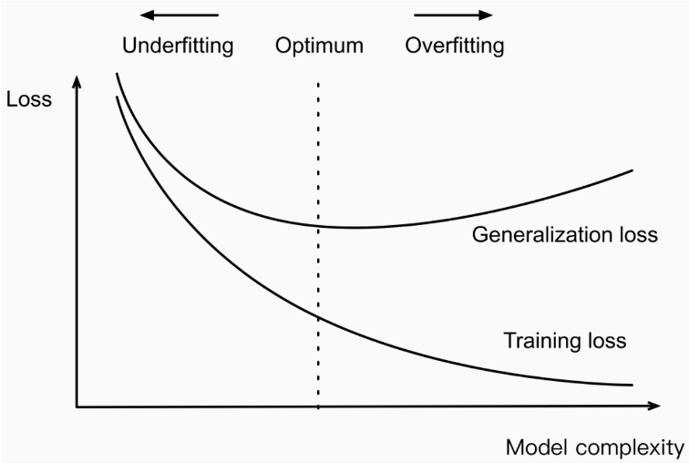
Generalization Error
What we truly care about when trying to understand how well a model fits a problem and its corresponding population data is the Generalization error. But generalization error is a theoretical value representing the expected error across all possible unseen data from the true underlying distribution.
Instead we use test error, which is the standard empirical estimate of a model’s generalization error.
Generalization error is typically a consequence of two types of model fitting issues.
Underfitting
Overfitting
A good model balances this by learning meaningful patterns while avoiding unnecessary complexity that yields diminishing returns or worse.
As mentioned earlier, the fitting process is a tradeoff between:
To understand the impact of each of these issues on your model, we need a better understanding of what constitutes learning error. Let’s consider a regression model where error is calculated in the form of squared loss.
Error Decomposition Formula: The total expected prediction error (such as Mean Squared Error) can be broken down into three parts: \[\text{Total Error} = Bias^2 + Variance + \text{Irreducible Noise}\] \[\underbrace{E[(Y-\hat f(X))^2]}_{\text{Expected prediction error}} = \underbrace{\operatorname{Bias}[\hat f(X)]^2}_{\text{Systematic error}} + \underbrace{\operatorname{Var}[\hat f(X)]}_{\text{Sensitivity to sample}} + \underbrace{\sigma^2}_{\text{Irreducible error}}\]
A complex model often reduces bias at the expense of increasing variance.
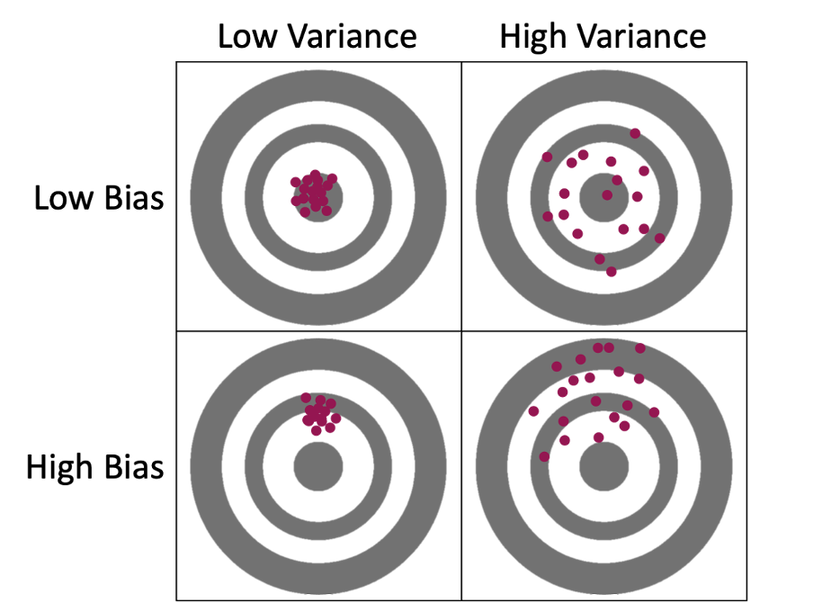
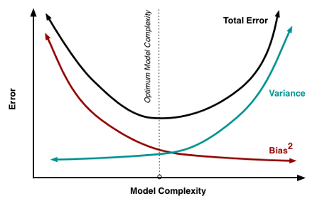
Two types of error.
The bias–variance tradeoff is the balance between two types of errors that stop machine learning models from performing well on new, unseen data.
The objective is to achieve low error on unseen observations, not necessarily the smallest training error. For regression, the model with the highest training \(R^2\) or lowest training \(RMSE\) is not automatically the best model. Instead, compare how well candidate models predict held-out observations and prefer the one with lower test error.
Two commonly used data splitting approaches help us estimate generalization error at the end of the model fitting process.
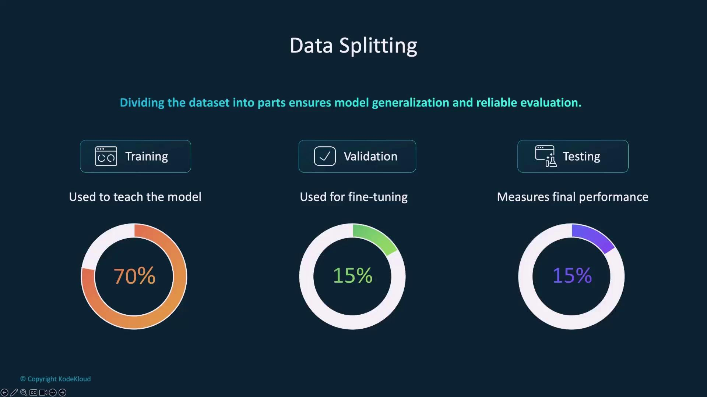
Both attempt to approximate performance on unseen data without having to collect an entirely new sample.
A common approach to partition data is to split your sample of observations into two non-overlapping sets.
Common choices are 70/30 or 80/20 (training/testing), but there is no universally optimal ratio. Common splitting methods are random or stratified splitting.
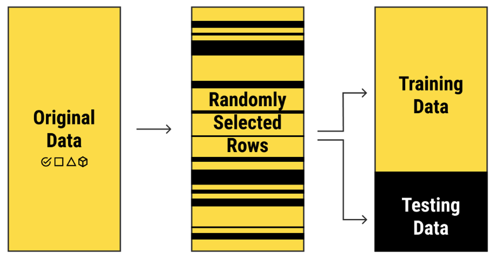
For classification, we may use stratified splitting to preserve class proportions. This is particularly useful for datasets that show considerable class imbalance!
Validation set
A validation set is different from a training set in that we do not use it to learn model parameters. Instead, it is used to inform meta-decisions, such as choosing between model designs or tuning experimental settings.
For example, in iterative algorithms, the model coefficients are learned by minimizing a loss/error function on the training data. However, the choice of running the algorithm for 100 iterations versus 200 iterations is one of those meta-decisions. Here, the number of iterations is an experimental setting rather than a parameter directly learned by the model from the training data. These types of settings are called hyperparameters. To choose between these hyperparameter values, we can first train two versions of the model—one for \(100\) iterations and the other for \(200\)—and then select the version that performs best on the validation set.
The final evaluation happens on the test set after all model parameters and hyperparameters have been chosen. We do not expose the model to the test set until then, which helps ensure an unbiased estimate of its generalization error.
We will use the built-in mtcars data (also available in Python through statsmodels) to predict fuel efficiency (mpg) from vehicle weight (wt) and horsepower (hp).
import statsmodels.api as sm
from sklearn.model_selection import train_test_split
from sklearn.linear_model import LinearRegression
from sklearn.metrics import mean_squared_error
df = sm.datasets.get_rdataset("mtcars").data
train, test = train_test_split(
df, test_size=0.30, random_state=3100)
fit = LinearRegression().fit(train[["wt", "hp"]], train["mpg"])
pred = fit.predict(test[["wt", "hp"]])
print(mean_squared_error(test["mpg"], pred) ** 0.5)2.619403816476319Splitting Methods
This example here is a demonstration of random splitting. However, stratified splitting could be the choice for classification problems with imbalanced class distribution in the data. A demonstration of this can be found in the Quiz 8 notebook.
A train-test split is simple and computationally inexpensive but we can think of a few downsides to this approach.
Can we make better use of our available training observations when comparing models?
To remedy the problems associated with a single split, we look into Cross-validation.
Cross-validation repeatedly partitions the data into subsets used for fitting and evaluating a model.
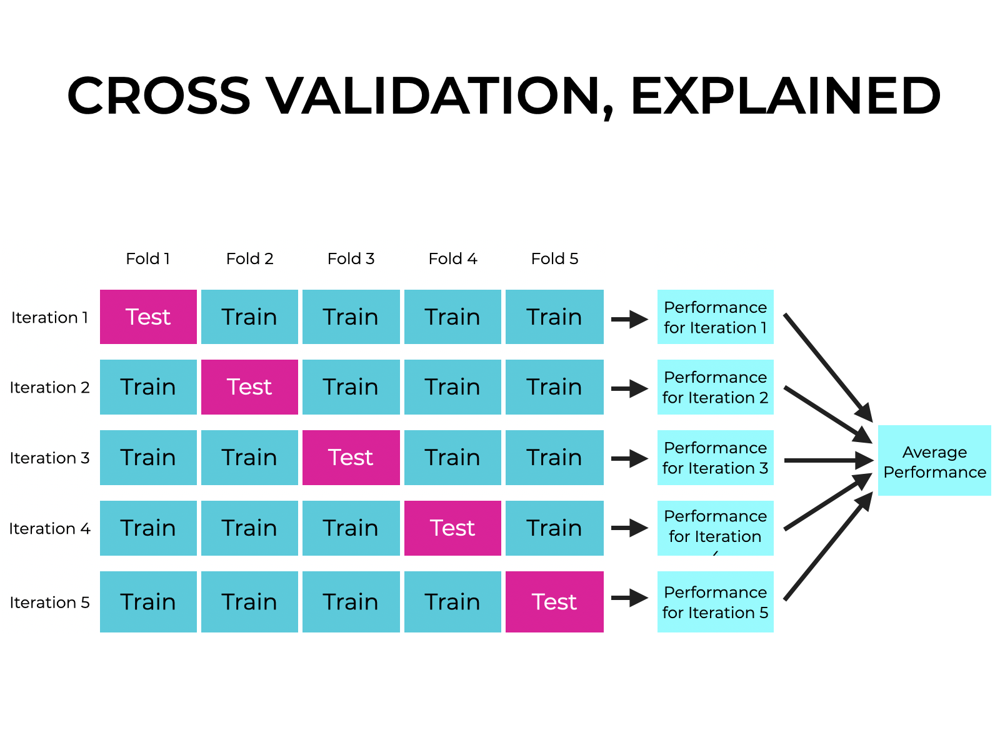
Randomly divide the training data into \(k\) approximately equal-sized folds.
Over \(k\) iterations:
Average the validation errors across all \(k\) iterations.
Use the average validation error to compare candidate models.
Common choices include \(k=5\) or \(k=10\).
Reading Cross-Validation Results
Suppose we compare two candidate regression models using 5-fold cross-validation:
| Validation RMSE | Fold 1 | Fold 2 | Fold 3 | Fold 4 | Fold 5 | Mean |
|---|---|---|---|---|---|---|
| Model A | 3.2 | 3.5 | 3.1 | 3.7 | 3.5 | 3.4 |
| Model B | 3.0 | 4.5 | 2.8 | 4.2 | 3.5 | 3.6 |
What if you are really in a pinch?
For extremely small datasets we might not have enough data for even a separate single fold that can act as a representative quasi-validation set! In such situations we use a special case of \(k\)-fold cross-validation where \(k=n\) called LOOCV
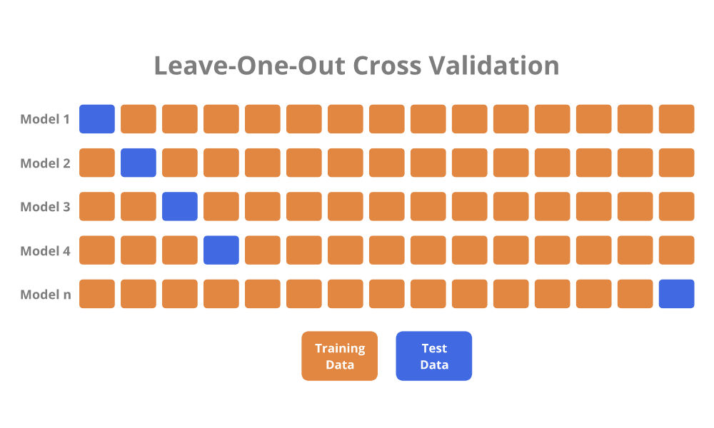
Main tradeoffs
| Construction | How evaluation works | Main consideration |
|---|---|---|
| Train-test split | Evaluate on one held-out test set | Depends on a single partition |
| \(k\)-fold CV | Average errors across \(k\) validation folds | Repeated fitting; useful for model comparison |
| LOOCV | Leave one observation out each time | Many fits; often more computationally demanding |
Rounding up the important distinctions
Use cross-validation on the training data to select a model. Keep a separate test set untouched for the final evaluation, when feasible.
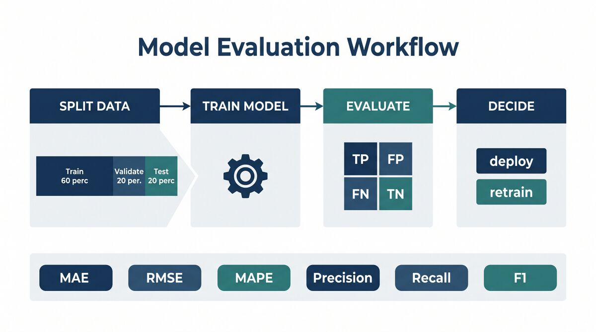
Coming up next
We have discussed how to detect problems with generalizability.
Next, we will explore regularization as one approach to controlling model complexity and reducing overfitting. Rather than changing model dimension over a sequence of models, we start with a large model and add constraints on the size of coefficients to regulate or eliminate some parameters.